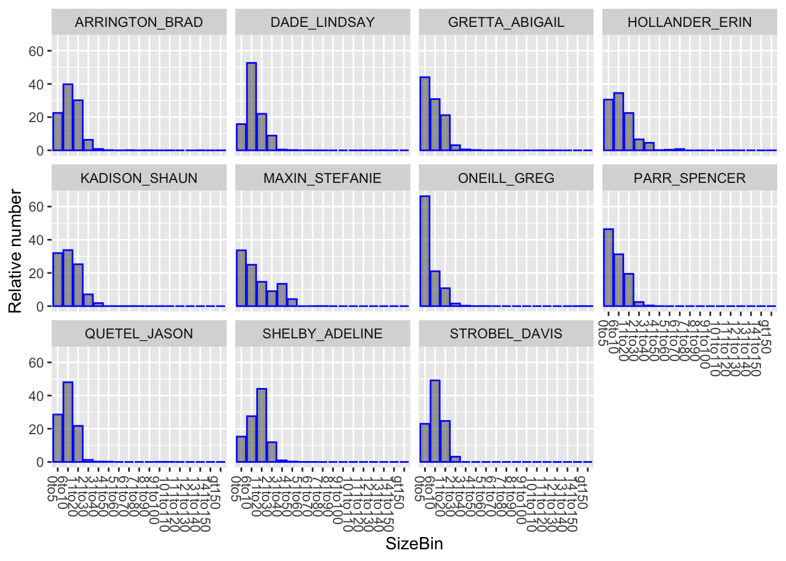
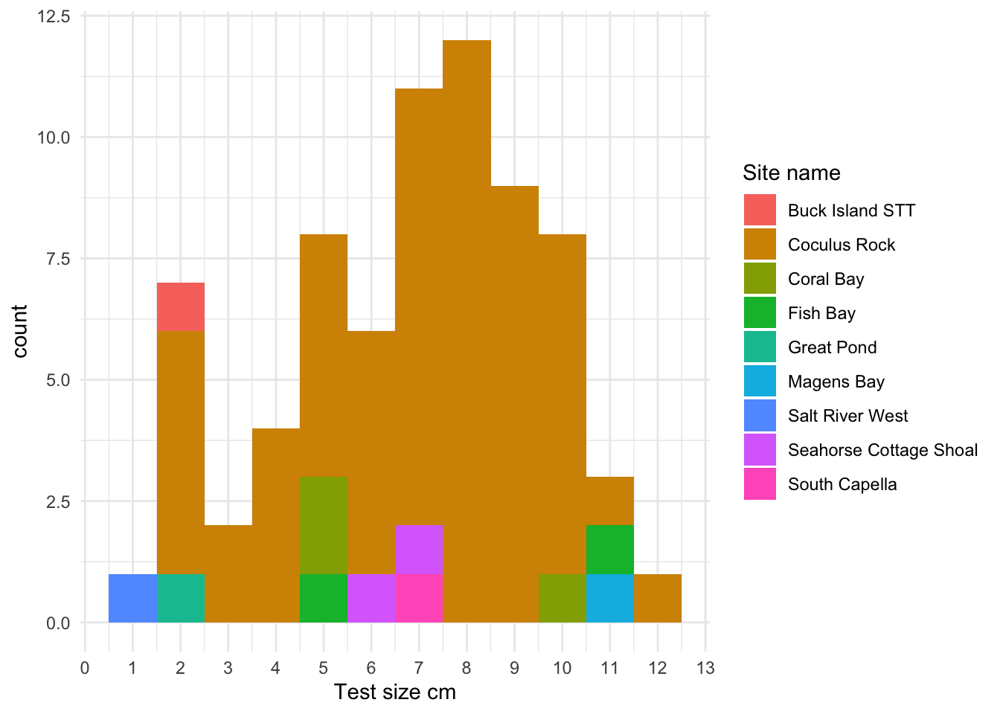

| Transects | Sites |
|---|---|
| 9 | 33 |
TCRMP 2025 Fish QAQC
2026-03-30
QAQC for TCRMP fish data for 2025. Suggestions for additions and improvement are welcomed.
Luckily, the data entry system catches a lot of easy mistakes like mispellings. We just have to go through the mistakes it might not catch. When we catch some that are fixable, change online and export again, or if the online database has already been cleared, change directly in the data.
Overview
How big are the datasets?
Transects have 6652 transect-species. Rovers have 3176 rover-species.
| Rovers | Sites |
|---|---|
| 3 | 33 |
Date ranges
Fish transects took place between dates: 2025-08-28, 2025-11-22
Diademas took place between dates: 2025-08-28, 2025-11-22
Fish rovers took place between dates: 2025-08-28, 2025-11-22
Notes
Are there any notes we should know about?
[1] "SWP \r\nno changes"
[2] "SWP\r\nno change"
[3] "SWP\r\nNo change"
[4] "SWP No changes"
[5] "SWP\r\nchanged white grunt from 5 to 1"
[6] "SWP \r\nMoved caesar grunt over one bin"
[7] "SWP \r\nmoved schoolmaster over one bin \r\n"
[8] "added bluestriped lizard (2) -ALS"
[9] "brown chromis removed 100 from 0-5cm and 12 from 6-10cm and put 100 on 6-10 and 12 on 11-20, added 1 (21-30cm) striped parrotfish -ALS"
[10] "proofed 02/23/26 ALS"
[11] "Queen triggerfish (45), proofed 02/23/26 ALS"
[12] "changed striped parrotfish from 21 to 20 -ALS"
[13] "white grunt changed it from 13 to 12 in (21-30cm), creole wrasse changed 11-20cm from 15 to 6 -ALS"
[14] "changed brown chromis from 50 to 30 (6-10cm), bicolor changed it from 3 (6-10cm) to 3 (0-5cm), gray angelfish changed (21-30cm) from 1 to 2, princess parrotfish added 1 (6-10cm) and 3 (11-20cm) (it was written twice on sheet, combined them) -ALS"
[15] "changed 6-10cm blue chromis from 23 to 28, brown chromis (6-10cm) changed it from 42 to 63 -ALS"
[16] "Nassau 42 cm, \r\nAdded 5 (11-20cm) tomtate, squirrelfish changed 11-20cm from 1 to 3, brown chromis added 1 for 6-10cm, removed indigo hamlet there was no tick mark on sheet -ALS"
[17] "YF grouper (42cm) proofed 02/23/26 ALS"
[18] "I think tallies in wrong bin for bar jack and tomtate.. first transect back and slightly narced? \r\n\r\nProofed 10/29/25 ALG\r\n\r\nlongspine changed from 2 in 11-20cm to 1 in 6-10cm and 1 in 11-20cm, stoplight parrotfish changed it from 2 to 1 in 0-5cm,"
[19] "red hind (38cm), mutton snapper (45cm) proofed 02/23/26 ALS"
[20] "mutton snap (47cm), Yellowfin grouper (35cm), proofed 02/23/26 ALS"
[21] "I think the Gray Angel tallies are in BHW line - ALG \r\nchanged blue chromis from 25 to 26 (0-5cm) -ALS"
[22] "barracude (82cm)\r\nmutton snapper (65cm)\r\nchanged blue chromis from 25 to 15 (6-10cm), bluehead wrasse changed it from 4 to 5 (0-5cm) -ALS"
[23] "french angel (38 and 41cm) go rid of mahogany (11-20cm) 1, tomtate moved the 2 from 11-20cm to 6-10cm, added french angel 1 in 31-40cm -ALS"
[24] "barracude (76cm)\r\nchanged blue chromis from 41 to 51 (6-10cm) -ALS"
[25] "SWP changed DR fish to Ocean surgeonfish"
[26] "SWP no change"
[27] "SWP changed Bicolor Damsel to Brown Chromis"
[28] "Proofed 10/29/25 ALG \r\nSWP no change"
[29] "Proofed 10/29/25 ALG\r\nSWP no change"
[30] "SWP added sergeant majors"
[31] "Proofed 10/29/25 ALG, squirrelfish changed 1 from 11-20 to 21-30cm -ALS"
[32] "Red hind 48 cm\r\nProofed 10/29/25 ALG, \r\nproofed 02/23/26 ALS"
[33] "Queen triggerfish (41, 46), proofed 02/23/26 ALS"
[34] "dog snapper - 43 cm, gray snapper changed 21-30cm from 52 to 53 -ALS"
[35] "changed bicolor damsel from 32 to 30 (6-10cm), changed 110 sennets from 11-20cm to 21-30cm, YT snapper changed it from 1 to 2 (21-30cm) -ALS"
[36] "BH wrasse changed from 50 to 60 in 0-5cm, removed indigo hamlet (there was no tick marks on sheet), added 1 YH wrasse in the 11-20cm -ALS"
[37] "Proofed 10/29/25 ALG, proofed 02/23/26 ALS"
[38] "Proofed 10/29/25 ALG, changed bluehead wrasse from 28 to 27 (0-5cm) -ALS"
[39] "Queen triggerfish (41, 46) proofed 02/23/26 ALS"
[40] "Queen trigger (42, 45), proofed 02/23/26 ALS"
[41] "blue chromis (0-5cm) changed it from 14 to 15, bicolor damsel changed it from 35 to 55 (0-5cm) -ALS"
[42] "dog snapper 42cm, added 2 (21-30cm) squirrel fish, removed french grunt (there were no ticks on the data sheet) -ALS"
[43] "added 1 stoplight (31-40cm) -ALS"
[44] "Nassau - 48 cm \r\nRed hind - 50 cm \r\nCubera - 65 and 70 cm \r\nLionfish - 32 cm \r\nProofed 10/29/25, \r\nlionfish added 1 in the (0-5cm), blue chromis changed (0-5cm) from 30 to 24 -ALS"
[45] "cubera 50 cm \r\nchanged cubera from 51-60 to 41-50cm -ALS"
[46] "cubera snapper 52, 64 cm \r\nproofed 02/23/26 ALS"
[47] "cubera snapper (150cm)\r\nnassau grouper (60cm)\r\nremoved porkfish, striped parrot (6-10cm) changed it from 14 to 9, (11-20cm) changed it from 17 to 15, (21-30cm) -ALS"
[48] "cubera snapper (130, 150, 140cm) \r\nyellowfin grouper - 60cm\r\nnassau grouper - 45 cm\r\nred band parrot added 1 for 21-30cm -ALS"
[49] "Proofed 10/29/25 ALG \r\nProofed 01/24/2026 GAC"
[50] "Proofed 10/29/25 ALG \r\nDeleted 1 Rebband PF in 0-5cm 01/24/2026 GAC"
[51] "Proofed 01/24/2026 GAC"
[52] "added 1 4eye in 0-5cm; changed 1 gray snapper in 6-10cm to 1 in 11-20cm 01/24/2026 GAC"
[53] "changed 3 redband pf in 11-20cm to 4; added yt pf, bluestriped liz, and lf damsel 01/24/2026 GAC"
[54] "changed yt snap from 1 in 11-20cm to 1 in 21-30cm 01/24/2026 GAC"
[55] "Red hind = 48 cm \r\nProofed 10/29/25 ALG\r\nSWP no change"
[56] "Lionfish 35 cm \r\nProofed 10/29/25 ALG\r\nSWP no change"
[57] "Proofed 10/29/25\r\nSWP no change"
[58] "SWP No change"
[59] "SWP \r\nMoved blue and brown chromes back one box"
[60] "Proofed 10/29/25 ALG, moved 1 redband from 21-30cm to 31-40cm, added 1 to 31-40cm french grunt, added 1 to 21-30 for graysby -ALS"
[61] "Proofed 10/29/25 ALG, \r\nmoved 5 from 0-5cm to 6-10cm, moved 2 from 6-10cm to 11-20cm for cocoa damsel -ALS"
[62] "Proofed 10/29/25 ALG\r\nChanged bluestriped lizardfish from 21-30cm -> 41cm-50cm 1/24/2026 GAC"
[63] "Proofed 10/29/25 ALG \r\nProofed 01/24/26 GAC"
[64] "Proofed 10/29/25 ALG \r\nChanged RB Parrot from 21-30cm -> 31-40cm 01/24/2026 GAC"
[65] "1/2 more nassau outside of transect, Pillar coral found and ACER colony \r\nChanged 18 slippery dick at 6-10cm to 5 at 6-10cm and 2 at 11-20cm; changed 10 sgt majors in 0-5cm to 10 in 6-10cm 01/24/2026 GAC"
[66] "Proofed 01/25/2026 GAC"
[67] "Red hind (28, 29, 32). Queen Triggerfish (32)\r\nProofed 01/25/2026 GAC"
[68] "Proofed 10/31/25\r\nProofed 01/25/2026 GAC"
[69] "tiger grouper = yellowfin grouper (50cm) \r\ngrunt = white grunt\r\nProofed 10/31/25\r\nProofed 01/25/2026 GAC\r\n"
[70] "Changed 3 spot dam from 3 in 6-10cm and 4 in 11-20cm to 1 in 6-10cm 01/24/2026 and deleted 3 BHW in 6-10cm and 13 in 11-20cm GAC"
[71] "Graysby (23, 24)\r\nChanged Bar Ham from 3 in 11-20cm to 2 01/24/2026 GAC"
[72] "Proofed 10/30/25\r\nProofed 01/24/2026 GAC"
[73] "Proofed 10/30/25 ALG\r\nProofed 01/24/2026 GAC"
[74] "Proofed 01/24/2025 GAC"
[75] "Proofed 10/31/25"
[76] "red hind = 55 cm \r\nhogfish = 35 cm \r\nlionfish = 25 cm \r\nProofed 11/3/25 ALG\r\nSWP no change"
[77] "changed blue chromis 6-10cm from 6 to 18 -ALS"
[78] "got rid of 1 in 6-10cm for schoolmaster -ALS"
[79] "Proofed 11/3/25 ALG,\r\nstriped parrotfish changed it from 13 to 12 for 6-10cm -ALS"
[80] "lionfish - 35 and 30 cm (5 not in transect) \r\nProofed 11/3/25, changed 91 to 131 0-5cm blue chromis -ALS"
[81] "added french grunt 1 (11-20cm) -ALS"
[82] "cero 48cm, stoplight 2 changed it from 11-20cm to 21-30cm -ALS"
[83] "changed 2 french gr in 11-20cm to 1; and 3 3spot in 11-20cm to 1 01/25/2026 GAC"
[84] "lionfish (28)\r\nchanged longsnout butfl to reef butfl 01/25/2026 GAC"
[85] "changed 3 rb pf to 2 in 21-30cm"
[86] "changed BHW from 2 in 0-5cm, 6 in 6-10cm, 2 in 11-20cm to 1 in 0-5cm and 3 in 6-10cm and deleted the 11-20cm 01/25/2026 GAC"
[87] "cs"
[88] "CLG Proof - 2/19/2026"
[89] "CLG Proof - 2/19/2026\r\nNurse Shark (140)"
[90] "cs\r\nmoved the 10 for grunt spx from 6-10 to 0-5cm"
[91] "CLG Proof - 2/18/2026"
[92] "barracuda (61)\r\nCLG Proof - 2/18/2026" [1] "SWP\r\nyellowbelly hamlet changed from 1 to 2"
[2] "SWP \r\nadded trumpet fish for 1\r\nadded yellowtail snapper for 3 \r\nadded grays by for 2"
[3] "SWP \r\nno change"
[4] "proofed 02/23/26 ALS"
[5] "added doctorfish 2, changed spanish grunt from 1 to 2, added shy hamlet 2, changed yellowtail hamlet from 1 to 2, added sharpnose puffer 1 -ALS"
[6] "Proofed ALG 10/29/25\r\nproofed 02/23/26 ALS"
[7] "fairy basslet changed it from 1 to 2, added blue striped grunt 1 -ALS"
[8] "SWP no change"
[9] "Red hind 55 cm \r\nSWP added fairy basslet-2\r\n"
[10] "removed spanish grunt (no tick marks near it) -ALS"
[11] "Proofed 10/29/25 ALG, proofed 02/23/26 ALS"
[12] "nassau size 55 & 38, changed sunshine fish from 2 to 3 -ALS"
[13] "Nassau (35), Cubera (105) & (90), proofed 02/23/26 ALS"
[14] "Red hind - 48cm\r\nNassaur - 54 and 45 cm \r\nCubera - 76cm \r\nProofed 10/29/25 ALG \r\nproofed 02/23/26 ALS"
[15] "Proofed 01/25/2026 GAC"
[16] "SWP added squirrel fish\r\n"
[17] "one 35 cm Nassau \r\nSWP no change"
[18] "added greenblotch parrot (3), added butter hamlet (1) -ALS"
[19] "4 Nassau spotted throughout dive\r\ndeleted 3 eyebar goby 01/25/2026 GAC"
[20] "Proofed 01/25/2025 GAC"
[21] "added 1 queen trigger 01/25/2026 GAC"
[22] "tiger = yellowfin (48 cm)\r\nProofed 10/31/25 ALG\r\nProofed 01/25/2026 GAC"
[23] "added 1 graysby and 3 french grunt 01/25/2026 GAC"
[24] "lionfish - 35 and 20 cm \r\nnassau - 55 cm; big boy\r\nProofed 11/3/25 ALG\r\nSWP no change"
[25] "sennets = rainbow runner -- oops \r\nblack jack = horse eye jack oops again \r\nProofed 11/3/25 ALG, proofed 02/23/26 ALS"
[26] "added 2 queen trigger, 1 orangespotted file, and 1 bar jack 01/25/2026 GAC"
[27] "cs"
[28] "Nassau (28)"
[29] "CLG Proof - 2/18/2026"
[30] "CLG Proofed - 2/18/2026"
[31] "Nassau - 35 cm \r\nCLG Proof - 2/18/2026"
[32] "Nassau (31)" Abundance
An observation is flagged if the number of fish observed is greater than the maximum number guideline.
Transect Abundance
There were 2.9% of transect species flagged on abundance.
Rover Abundance
Indices are converted to the low end of the count bin (1 = 1, 2 = 2, 3 = 10, 4 = 100, 5 = 1000) before comparing to maximum count guideline.
There were 1.7% of rover species flagged on abundance.
Transect Sizing
We use size bins to estimate fish lengths, and we have a maximum and minimum size guideline for each species. An observation is flagged if the small end of the bin is larger than the max size for the species, or the large end of the bin is smaller than the min size for the species.
There were 0.5% of transect observations flagged on size.

Species Richness
Transects
Rovers
Rare Fish
Diadema
Overview
| Transects | Sites |
|---|---|
| 7 | 6 |
| 8 | 1 |
| 9 | 26 |
Diadema Abundance
Diadema Sizing
There were 0 Diadema observed but not sized. These will be added into counts with a size of NA.

Changes Made
- Changed remora to sharksucker on Meri transect 6
- Changed baby spanish grunts to grunt species on Coral Bay transect 2
- Changed 31-40 cm french grunts at SSJ 6 and MGN 2 to 21-30 cm (FishBase max is 30 cm)
- Changed 11-20 cm longsnout butterflyfish to 6-10 cm (FishBase max is 10 cm)
- Changed 21-30 cm reef squirrelfish to 11-20 cm (FishBase max is 15 cm)
- Changed 31-40 cm redband parrotfish to 21-30 cm (FishBase max is 28 cm)
- Changed 31-40 cm blackbar soldierfish to 21-30 cm (FishBase max is 25 cm)
- Changed 31-40 cm striped parrotfish to 21-30 cm
- Changed white margate at Buck STX transect 7 to grunt species
- Changed blue hamlet to black hamlet at Botany transect 3
- Determined missing Diadema transects were forgotten so no zeros were added.